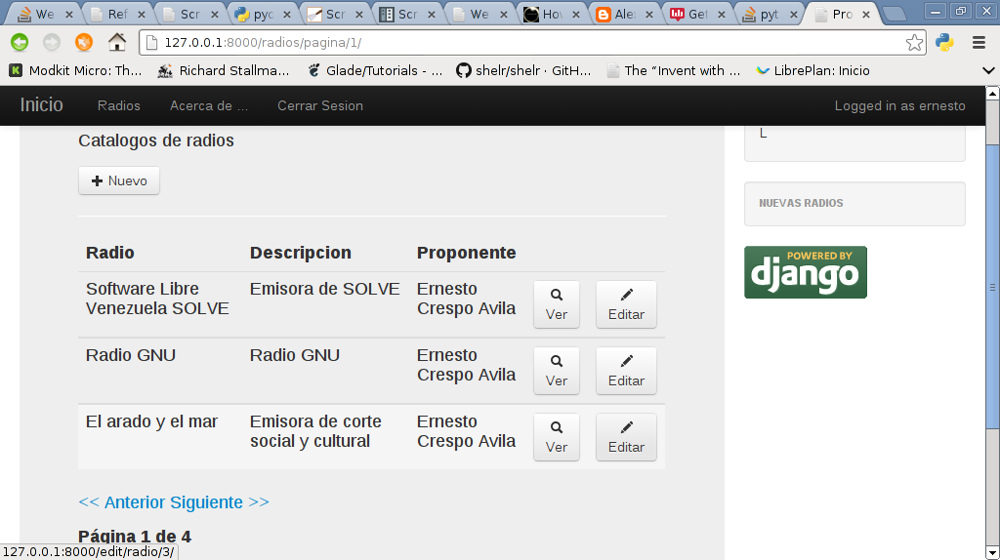
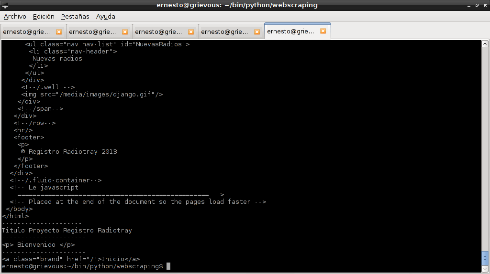

Una introducción a Beautiful Soup 4 en Python.
Posted on mié 23 octubre 2013 in Tutorial Python • 3 min read
Beautiful Soup es una librería de Python que facilita la extracción de datos de archivos html y xml.
Este artículo se basa en el artículo de Python For Beginners .
La documentación oficial se puede leer en el siguiente enlace.
Para instalar beautifulsoup es necesario tener instalado la librería python-bs4 el cual es un parser html.
#apt-get install python-bs4
Luego se instala beautiful soup 4:
#pip install beautifulsoup4
Para utilizar beautifulsoup se le puede pasar un archivo html o un URL, pero para capturar el archivo html se tiene que usar urllib2, beautifulsoup no lo hace sólo.
El API tiene varias formas de realizar filtros para la busqueda:
1. Busqueda por string, se usa la funciónn find_all:
soup.find_all("Prueba)
De esta forma se busca todas las palabras Prueba en el archivo. 2. Expresión regular: El siguiente código muestra todos los tags html que comiencen con la letra b.
import re
for tag in soup.find_all(re.compile("^b")):
print(tag.name)
El siguiente código muestra todos los tags html que contenga la letra b:
import re
for tag in soup.find_all(re.compile("b")):
print(tag.name)
- Una lista.
Al pasar una lista
beautifulsoupencontrará cualquier elemento de la lista. El siguiente código muestra como se encuentra todas las a y todas las b que aparezca:
print soup.find_all(["a","b"])
Para demostrar el uso de beautifulsoup se utilizará una aplicación en django que maneja un registro de radios por internet para la aplicación radiotray de Linux.
A continuación una captura de pantalla:

El código de ejemplo es el siguiente:
#!/usr/bin/env python
from bs4 import BeautifulSoup
import urllib2
#Se crea la instancia de BS pasando la URL con urllib2.
soup = BeautifulSoup(urllib2.urlopen("http://127.0.0.1:8000").read())
print "--------------------"
#Se muestra todo el contenido de la pagina
print soup.prettify()
print "---------------------"
#Se muestra el titulo de la pagina
print "Titulo" ,soup.title.string
print "----------------------"
#Se muestra el tag p de html que contiene la pagina
print soup.p
print "----------------------"
#Se muestra el tag a de html que contiene la pagina
print soup.a
A continuación se muestra una imagen con el resultado del programa:

Para extraer URLs de la página se busca el tag html a, luego lo que contenga la palabra href:
#!/usr/bin/env python
from bs4 import BeautifulSoup
import urllib2
#Se crea la instancia de BS pasando la URL con urllib2.
soup = BeautifulSoup(urllib2.urlopen("http://127.0.0.1:8000").read())
print "--------------------"
#Para extraer url de la pagina.
for link in soup.find_all('a'):
print(link.get('href'))
El resultado se muestra a continuación:
--------------------
/
/radios/pagina/1/
/acerca/
/login/
Para extraer todo el texto de la página:
#!/usr/bin/env python
from bs4 import BeautifulSoup
import urllib2
#Se crea la instancia de BS pasando la URL con urllib2.
soup = BeautifulSoup(urllib2.urlopen("http://127.0.0.1:8000").read())
print "--------------------"
#Para extraer todo el texto de la pagina.
print(soup.get_text())
El resultado se muestra a continuación:
....
Bienvenido
/span
Radio
L
/.well
Nuevas radios
/.well
/span
/row
© Registro Radiotray 2013
/.fluid-container
Le javascript
==================================================
Placed at the end of the document so the pages load faster
Esta es la base para realizar webscraping que se explicará en el siguiente artículo.
¡Haz tu donativo! Si te gustó el artículo puedes realizar un donativo con Bitcoin (BTC) usando la billetera digital de tu preferencia a la siguiente dirección: 17MtNybhdkA9GV3UNS6BTwPcuhjXoPrSzV
O Escaneando el código QR desde la billetera: